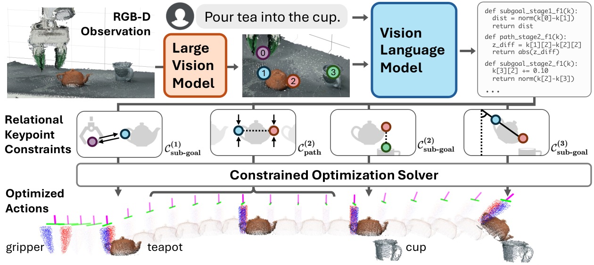

ReKep
将“壶嘴对准杯口、再倾斜”写成关键点间的关系，让优化器求出动作。
ReKep: Spatio-Temporal Reasoning of Relational Keypoint Constraints for Robotic Manipulation
7 项真实任务：自动生成约束 44.3%，人工标注约束 68.6%，VoxPoser 基线 10.0%。
01这篇要解决什么？
任务经常不是一个位置目标，而是一组随阶段变化的关系：抓把手、对齐壶嘴、倾斜、保持杯口下方关系。ReKep 用三维语义关键点及其约束函数描述这些要求，在模型的语言推理与机器人连续控制之间建立接口。
02先看一个场景
指令是“把茶壶里的茶倒进杯子”。这件事很难写成一句目标：壶嘴要对准杯口，搬运途中壶得保持竖直，只有到位之后才允许倾斜。写成一个末端目标位姿会丢掉过程中的约束，写成一段轨迹又绑死了这一次的物体位置。
03方法怎样运转？

- 01
关键点提议：DINOv2 加 SAM，全程不训练
先用 DINOv2（带 registers 的 ViT-S14）取 patch 级特征，双线性插值放大回原图尺寸；再用 Segment Anything 分出场景中所有掩码。每个掩码内的特征做 k=5 的 k-means（余弦相似度），簇心即候选关键点，经标定过的 RGB-D 相机投到三维，工作区外与彼此过近的点被过滤。同一掩码内的点会被记下来，后续在优化中充当一个刚体分组。
- 02
约束生成：让 GPT-4o 写 Python 函数
候选点带编号叠回原图，与任务指令一起送进 GPT-4o；提示只有通用说明，没有图文示例。模型输出任务需要几个阶段，以及每个阶段的 sub-goal 约束（阶段结束时要满足）和 path 约束（阶段全程要满足）。每条约束是一个无状态的 Python 函数 f(k)，用 NumPy 在关键点数组上做算术，f(k) ≤ 0 表示满足。函数里不写死坐标，只写关系，坐标在调用时由跟踪器填入——这也让模型可以用点之间的算术表达三维旋转，绕开旋转表示与数值计算。
- 03
分层求解：先解子目标位姿，再解到达路径
完整问题被分解成只求当前阶段。子目标问题的决策变量是一个末端位姿（双臂则两个），目标函数里含碰撞、可达性、位姿正则、解的一致性等辅助代价，抓取阶段另外接入 AnyGrasp 的抓取质量；路径问题再从当前位姿求一条到该子目标的轨迹，全程满足 path 约束。两者都用 SciPy 求解，首次用 Dual Annealing 配 SLSQP 做全局搜索（约 1 秒），之后基于上一解只跑局部优化器，约 10 Hz。优化中的前向模型采用刚性假设：被抓的那组关键点随末端做同一刚体变换，其余点视为不动，这个近似只在 0.1 秒的求解窗口内成立。
- 04
闭环：跟踪、推进、回退
关键点位置由一个基于 DINOv2 特征余弦匹配的点跟踪器以 20 Hz 更新，每轮重新求解一次。末端与子目标位姿的距离进入容差就推进到下一阶段；同时每个控制周期都检查当前阶段的 path 约束是否被违反，一旦违反就逐级回退到 path 约束仍然成立的更早阶段，例如杯子在倒茶途中被人从夹爪里取走。阶段骨架本身固定，系统不在运行中重新生成。
keypoints = kmeans(DINOv2 特征 ∩ SAM 掩码, k=5) → 投到三维 # 现成模型，无训练
stages = GPT-4o(带编号的图, instruction) # 每阶段 C_subgoal / C_path
i = 1
while i <= len(stages):
k = tracker(所有相机) # DINOv2 特征余弦匹配，20 Hz
if 违反(C_path[i], k):
i = 回退到 path 约束仍成立的更早阶段; continue
e_goal = argmin 辅助代价(e) s.t. f(h(k, e)) <= 0, f ∈ C_subgoal[i]
path = argmin 辅助代价(e_t:g) s.t. f(h(k, e)) <= 0, f ∈ C_path[i]
execute(path[0]) # h 为刚体前向模型，仅 0.1 秒内有效
if dist(e_now, e_goal) < eps: i += 1 # 达到子目标才推进阶段方法与结果的原文定位见本页引用。
04跟着这个场景走一遍
教学推演：回到上面的场景。第一步，系统还完全不理解任务：DINOv2 的特征加 SAM 的掩码在画面里提出一批候选点，壶柄、壶嘴、杯口各自落上一两个编号点，同属一个掩码的点被记成一组刚体。第二步，带编号的图与这句指令交给 GPT-4o，它给出三个阶段——抓壶、对准、倾倒——并为每个阶段写出 Python 约束：阶段一让末端靠近壶柄；阶段二的 sub-goal 要求壶嘴位于杯口上方，同时配一条 path 约束要求壶在移动途中保持竖直；阶段三的 sub-goal 才把姿态改成倾倒角。关键在于这些函数写的是关系而不是坐标，壶和杯此刻在哪里并不进入函数体。第三步，求解器接手：先解当前阶段的子目标位姿（含碰撞、可达性等辅助代价，抓取阶段再叠上 AnyGrasp 的抓取质量），再解一条到达它的路径；首次全局搜索约 1 秒，之后局部热启动约 10 Hz。第四步，跟踪器以 20 Hz 刷新关键点，每轮重解一次；末端与子目标的距离进入容差就推进阶段，而如果阶段二的「保持竖直」在半途被违反，系统会回退到仍然成立的更早阶段重来。若少写了那条 path 约束，优化器完全可以给出一条提前倾斜、把茶洒在路上的解——它保证的只是被写下来的条件。至于阶段序列本身，这套系统不会改：骨架由 GPT-4o 一次定下，换一套骨架需要重跑关键点提议与 VLM。
05实验到底表现怎样？
在带轮单臂与固定双臂平台上测试倒茶、收书、回收罐、封箱、叠衣、装鞋、协作折叠等 7 项任务，每项 10 次；部分任务另加物体位置扰动。Auto 与 Annot. 分别表示自动生成和人工标注约束。
作者报告的实验结果 · v2
| 结果设置 | VoxPoser | ReKep Auto | ReKep Annot. |
|---|---|---|---|
| 7 项任务总体 | 10.0% | 44.3% | 68.6% |
| 倒茶 | 0/10 | 3/10 | 8/10 |
| 3 项扰动任务总体 | 6.7% | 26.7% | 46.7% |
原始证据：约束与求解：§3 ↗ · 真实结果：表 1–2 ↗ · 误差分解与限制：§4.3–5 ↗
最该记住的是 44.3% 与 68.6% 的差距：约束表示可用，不等于系统总能自动提出正确关键点和约束。人工标注结果是诊断生成环节的参考，不能作为全自动系统成绩。
06收益来自哪里，又停在哪里？
消融与机制证据
表 1–2 的 Auto / Annot. 对照隔离了一部分约束生成影响；§4.3 的失败分析还指出关键点跟踪、提议与 VLM 推理是主要误差来源。优化器并不是唯一或最大的瓶颈。
结论的适用边界
模型来源这一层值得单独记：这套系统没有任何由作者训练的模块——关键点提议用 DINOv2 与 SAM，约束由 GPT-4o 写成 Python，抓取候选来自 AnyGrasp，优化用 SciPy 的 Dual Annealing 与 SLSQP，碰撞场用 nvblox 算 ESDF，底层是 PyBullet 求逆运动学加 Deoxys 的关节阻抗控制。代价是系统表现直接绑定这些现成组件：§4.3 的误差分解中点跟踪器造成的失败最多，关键点提议与 VLM 次之，优化器反而不是主要瓶颈。此外关键点前向模型使用刚性近似，遮挡影响跟踪，任务阶段骨架也固定不重生成。服装实验中的「策略成功」和「给定可行策略后的执行成功」有不同条件，不能直接相乘冒充新的实测端到端数值。
07放回二十篇的脉络
它与 VoxPoser 展示两种可解释中间表示；对 Agent 研究者而言，重点是设计能被工具求解、还能定位错误的输出，而不只是长文本解释。
08把阅读变成一个小研究
从两点对齐开始，构造一个满足全部已写约束却任务失败的例子，再补上缺失约束。
先自己回答：这项实验怎样才有解释力？
例如点对齐成功但碰撞了旁边物体。这说明优化器保证的是你写下来的条件；任务规范是否完整仍要单独验证。
- 用自己的话说出这篇改变了哪个模块。
- 画出它的输入、输出和一次失败如何被处理。
- 复述一个结果，同时说清基线、指标与实验条件。这一问不给答案，材料在第 05 节。
先自己答，再看前两问的参考答案
这篇改了哪个模块改的是任务目标的表示形式，以及最终由谁来求解。它既不给末端目标位姿也不给一条轨迹，而是把任务写成关键点之间的关系：分成若干阶段，每阶段配 sub-goal 约束（阶段结束时要满足）与 path 约束（阶段全程要满足），每条约束是一个无状态的 Python 函数，坐标不写死、在调用时才由跟踪器填入，剩下的留给数值优化器。与 RoboCodeX 的对照点在于这套系统没有任何由作者训练的模块——关键点提议用 DINOv2 与 SAM、约束由 GPT-4o 写、抓取候选来自 AnyGrasp、优化用 SciPy；底层也仍是 PyBullet 求逆运动学加 Deoxys 的关节阻抗控制，动作空间与控制器都没有动，阶段骨架同样不在运行中重新生成。
输入、输出与一次失败如何被处理输入是标定过的 RGB-D 观测与一句指令：先从 DINOv2 特征与 SAM 掩码里聚出候选关键点、投到三维，带编号叠回原图，与指令一起送进 GPT-4o；模型看到的就是这张带编号的图和一段通用说明，提示里没有图文示例，同一掩码内的点由系统记成一个刚体分组，这一步不经过模型。输出是任务需要几个阶段，以及每个阶段的 sub-goal 约束与 path 约束，都写成在关键点数组上做算术的 Python 函数、以 f(k) ≤ 0 表示满足；这些函数不直接交给控制器，而是交给 SciPy 求解器，先解当前阶段的子目标位姿、再解一条到它的路径，首次用 Dual Annealing 配 SLSQP 做全局搜索，之后基于上一解只跑局部优化。失败处理这一篇是有的，而且写得具体：跟踪器以 20 Hz 刷新关键点、每轮重解一次，末端与子目标的距离进入容差就推进阶段，同时每个控制周期都检查当前阶段的 path 约束有没有被违反，一旦违反就逐级回退到 path 约束仍然成立的更早阶段，例如杯子在倒茶途中被人从夹爪里取走。边界也随之清楚：能被发现的只有被写下来的约束所覆盖的那些失败，少写一条 path 约束，优化器照样会给出一条提前倾斜的解，而阶段骨架由 GPT-4o 一次定下，运行中不会重新生成。
将“壶嘴对准杯口、再倾斜”写成关键点间的关系，让优化器求出动作。
↗带着位置回到原文
首发日期用于时间排序；以下方法与结果对应 v2。数据为论文作者报告，本讲义没有独立复现实验。
QA就这一页提问或讨论
对某个数字、某条边界或某个推演有疑问，欢迎直接留言：讨论按页面分开，回复会保留在 XinrunXu/agentic-robotics-20-papers 的 Discussions 里，需要一个 GitHub 账号。